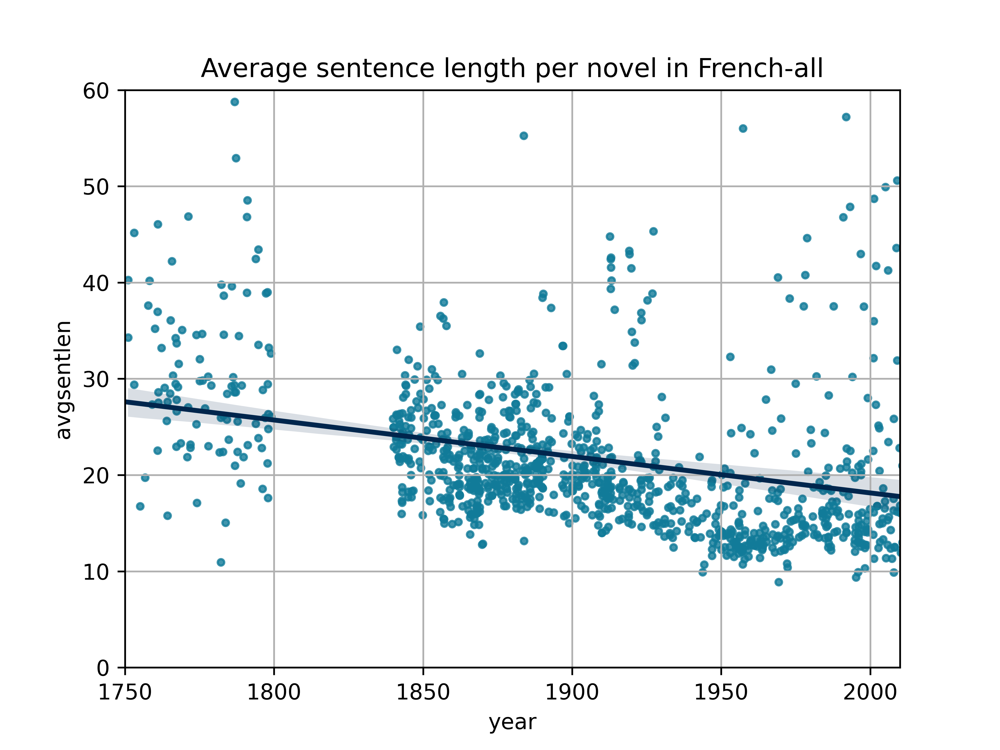

# Sentence length<br/>across ELTeC collections<br/>and Gutenberg Fiction <img data-src="img/basics/distant-reading_logo.png" height="40"></img> <br/><br/> **Christof Schöch (Trier, Germany)** *** Distant Reading Closing Conference, April 21-22, 2022 <br/>https://christofs.github.io/krakow22/ *** <img data-src="img/basics/tcdh-slim.png" height="50"></img> <img data-src="img/basics/uni-trier.png" height="50"></img> <img data-src="img/basics/cost-and-eu.png" height="70"></img> :: - Hi everyone, it's so great to speak here. -- ### Overview 1. [The issue with sentence length](#/2) 2. [Methods used](#/3) 2. [Findings from Gutenberg Fiction](#/4) 3. [Findings from ELTeC collections](#/5) 3. [Influence of direct speech](#/6) 5. [Conclusion](#/7) -- ## The issue with sentence length --- ### Why care about sentence length? * It is a proxy for syntactic complexity and one aspect of readability * It probably interacts with other features of texts, like narrator / character speech * It might vary also with first-person vs. third-person narration * People have assumed a decline of sentence length for a long time --- ### Biber and Conrad: English fiction * 500 words from each of 17 novels, 1720-1989 * Pretty clear decline, but very small sample * Reference: Biber and Conrad 1989 :: - Nice chronological spread - But tiny sample --- ### Hathi Trust * Fiction (red) vs. non-fiction (blue) * Clear decline for fiction between ca. 1820 and 1940 * Source: Hathi 1M dataset; Bagga and Piper 2022 :: - Typical of DH / CLS: much larger dataset - Interesting that fiction declines and non-fiction does not -- ## Method(s) --- ### Sampling * For ELTeC corpora, the full corpus is used * For Gutenberg Fiction, random sampling is performed, partly with stratification by decade --- ### How to establish average sentence length? * Basic approach: establish number of tokens and number of sentences * Either: Using level2 encoding, use @type="SENT" as marker of sentence boundaries * Or: Using level1 encoding or plain text, use spacy tokenizer + sentencizer * Strong correlation between these two approaches * See Viera, Picoli and Mendes 2018 for a comparison of approaches * Scatterplot: Novels by publication year and average sentence length --- ### Test for significant difference * Equal-sized samples from early and later time slice * Density plot: for visual check of overlap and range * Significance test: Mann-Whitney-U-Test -- ## Findings based on<br/>Gutenberg Fiction --- ### What do I mean by 'Gutenberg Fiction'? * Sample from the Gutenberg Project Corpus * Downloaded using tool by Gerlach and Font-Clos 2018: 63.208 items * Filtered out everything except English-language narrative fiction: 18.738 texts * Established year of publication for many of them using several heuristics * Information from Wikidata * Information from Worldcat * Years of author's birth and death * Sanity checks :: - The crazy thing is that year of publication is not included on PG! --- ### Gutenberg Fiction (100, 1840-1920) <a href="img/results/Gutenberg-sample1/avgsentlens+regression.png"><img height="300" data-src="img/results/Gutenberg-sample1/avgsentlens+regression.png"></a><a href="img/results/Gutenberg-sample1/comparison_1840-1859-vs-1900-1919.png"></a> * Sample size: 100 novels * Suitable for comparison with ELTeC-eng * Significant difference in average sentence length --- ### Gutenberg Fiction (1150, 1820-1920) <a href="img/results/Gutenberg-sample2b/avgsentlens+regression.png"></a><a href="img/results/Gutenberg-sample2b/comparison_1820-1839-vs-1920-1939.png"></a> * Sample size: 1150 novels * Longer period, stratified sample * Significant difference in average sentence length --- ### Gutenberg Fiction (4080, 1820-1940) <a href="img/results/Gutenberg-sample3/avgsentlens+regression.png"></a><a href="img/results/Gutenberg-sample3/comparison_1830-1849-vs-1910-1929.png"></a> * Sample size: 4080 novels * Longer period, unbalanced sample * Significant difference in average sentence length -- ## Findings based on ELTeC :: - Smaller corpora, but many more languages --- ### ELTeC-eng (1840-1920) <a href="img/results/ELTeC-eng_level2/avgsentlens+regression.png"></a><a href="img/results/ELTeC-eng_level2/comparison_1840-1859-vs-1900-1919.png"></a> * Corpus size: 100 novels * Standard period, quite even spread * Significant difference in average sentence length --- ### ELTeC-deu (1840-1920) <a href="img/results/ELTeC-deu_level2/avgsentlens+regression.png"></a><a href="img/results/ELTeC-deu_level2/comparison_1840-1859-vs-1900-1919.png"><img height="300" data-src="img/results/ELTeC-deu_level2/comparison_1840-1859-vs-1900-1919.png"></a> * Corpus size: 100 novels * Standard period, quite even spread * Significant difference in average sentence length --- ### ELTeC-hun (1840-1920) <a href="img/results/ELTeC-hun_level2/avgsentlens+regression.png"></a><a href="img/results/ELTeC-hun_level2/comparison_1840-1859-vs-1900-1919.png"></a> * Corpus size: 100 novels * Standard period, quite even spread * Significant difference in average sentence length --- ### ELTeC-por (1840-1920) <a href="img/results/ELTeC-por_level1/avgsentlens+regression.png"></a><a href="img/results/ELTeC-por_level1/comparison_1840-1859-vs-1900-1919.png"></a> * Corpus size: 100 novels * Standard period, quite even spread * Significant difference in average sentence length --- ### ELTeC-fra (1840-1920) <a href="img/results/ELTeC-fra_level1/avgsentlens+regression.png"></a><a href="img/results/ELTeC-fra_level1/comparison_1840-1859-vs-1900-1919.png"></a> * Corpus size: 100 novels * Standard period, quite even spread * No difference in average sentence length (!) --- ### French (ELTeC+, 1750-2010) <a href="img/results/French-all/avgsentlens+regression.png"></a><a href="img/results/French-all/comparison_1750-1799-vs-1950-1999.png"></a> * Corpus size: 1079 novels (fra + ext1 + ext2 + cligs-rv) * Enlarged period, with gap, uneven spread * Significant difference in average sentence length -- ## Influence of direct speech :: - Remember the results from the Hathi Trust dataset - The fiction declined in sentence lengh; - The non-fiction did not - Could this be connected to the increasing amount of direct speech? --- ### The case of French (1): overall <a href="img/sentence-types_overall.svg"></a> * Overall proportion of character vs. narrator speech * 56% narrator, 37% character speech :: - Reminder: No significant decrease over time during the ELTeC period - But: Significant difference between 1750-1800 vs. ELTeC period - Sample: 10 sentences from each of the 100 novels in ELTeC-fra --- ### The case of French (2): per decade <a href="img/sentence-types_decades.svg"></a> * Proportion of speech type per decade * Some variation, but no clear trend --- ### The case of French (3): sentence length <a href="img/sentence-length-by-type.svg"></a> * Average sentence length by speech type * Character speech does have, typically, shorter sentence length --- ### The case of German <a href="img/character-speech-DEU.png"></a> * Data from Brunner 2013: 13 short stories, 1787-1913 * Some suggestion of an increase in character speech -- ## Conclusions --- ### Sentence length * Sentences do get shorter over time, at least: * in novels / narrative fiction * for several languages * between 1840 and 1920 * Further data needed for link to direct speech * French: stable character speech proportion may explain stable sentence length * German: (data?) --- ### More general issues * We need larger datasets, including for the 20th century, in multiple languages * For existing larger datasets, we need much better metadata (publication data, narrative perspective, subgenre labels) * For ELTeC, annotation of character speech (or: modes of enunciation) would be important --- ### Thank you! <img height="500" data-src="img/danke.png"> --- ### References <br/> <small> * Bagga, Sunyam, und Andrew Piper. 2022. „HATHI 1M: Introducing a Million Page Historical Prose Dataset in English from the Hathi Trust“. Harvard Dataverse. https://doi.org/10.7910/DVN/HAKKUA. * Biber, Douglas, und Susan Conrad. 2009. Register, genre, and style. Cambridge textbooks in linguistics. Cambridge, UK ; New York: Cambridge University Press. * Byszuk, Joanna, Micha\l Woźniak, Mike Kestemont, Albert Leśniak, Wojciech \Lukasik, Artjoms Šeļa, und Maciej Eder. 2020. „Detecting Direct Speech in Multilingual Collection of 19th-Century Novels“. In Proceedings of LT4HALA 2020 - 1st Workshop on Language Technologies for Historical and Ancient Languages, 100–104. Marseille, France: European Language Resources Association (ELRA). https://www.aclweb.org/anthology/2020.lt4hala-1.15. * Gerlach, Martin, und Francesc Font-Clos. 2018. „A standardized Project Gutenberg corpus for statistical analysis of natural language and quantitative linguistics“. arXiv:1812.08092 [physics], Dezember. http://arxiv.org/abs/1812.08092. </small> </small>